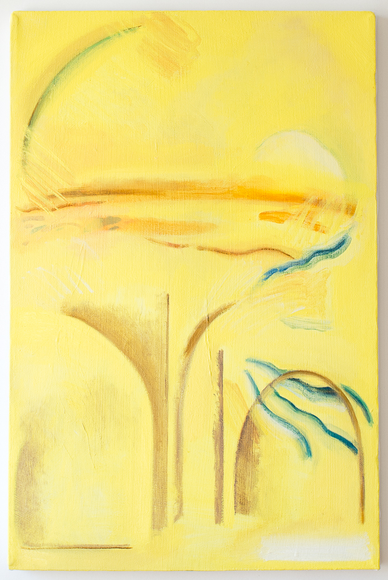

OPENING RECEPTION FOR STUDY ME AS MUCH AS YOU LIKE, YOU WILL NOT KNOW ME
January 2019
Saturday, January 12, 2019
Participating Artists:
- Cindy Cheng
- Magnolia Laurie
- Bill Schmidt
- Nick Primo
- Leyla Rzaye
Show Dates: January 12th-Feb 3rd
Gallery Hours Sundays 12-4pm
Persistently mining material, architectural and organic form, and structural decay, Cindy Cheng, Magnolia Laurie, Bill Schmidt, Nick Primo, and Leyla Rzayeva respond to the intersection of these subjects with the “self” across a spectrum of art mediums. These works explore their diverse instinctual responses to the natural world through subversion of formal uses of line and structural elements. Displayed together, the artwork works describe individual investigations into current social and political narratives and the transformation of these narratives into playful and unpredictable representations.
